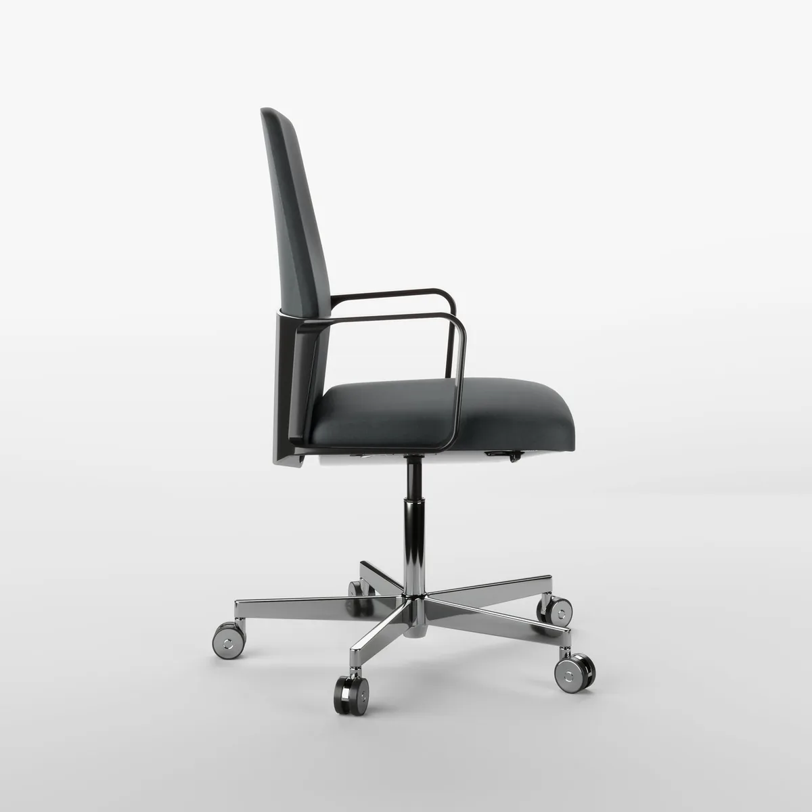
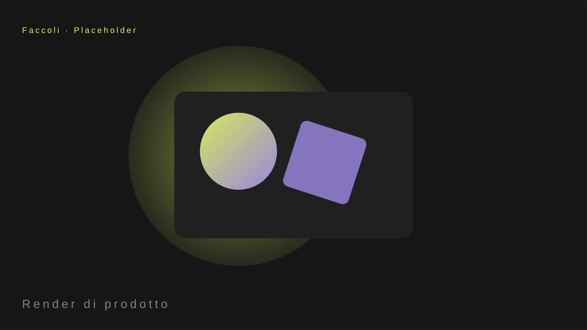
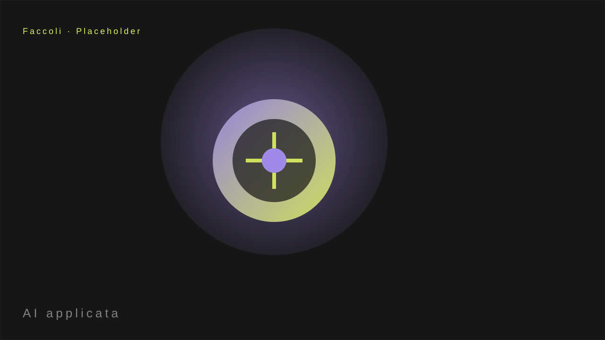
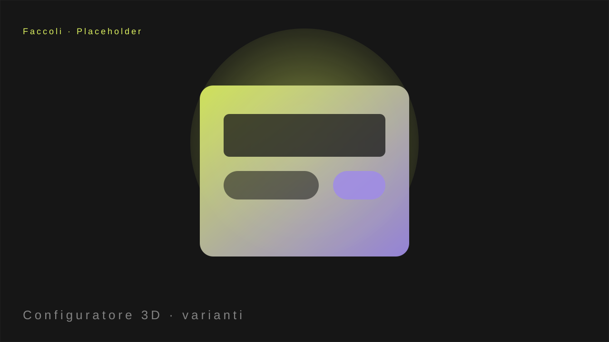

I generatori di immagini basati su intelligenza artificiale sono impressionanti. Ma per la manifattura c'è un limite che non si sposta con un prompt migliore: la coerenza.
Un prodotto industriale ha finiture precise, un CAD esatto, misure reali. Un modello AI può generare una bella immagine, ma non mantiene la stessa maniglia identica in ogni variante, con lo stesso materiale, nella stessa luce.

Dove l'AI resta indietro
- Coerenza di finiture: lo stesso alluminio, la stessa carta, in ogni configurazione.
- Fedeltà CAD: il prodotto è quello vero, misura per misura.
- Configurabilità reale: non un'immagine, ma un modello che l'utente cambia in tempo reale.
Dove l'AI lavora bene
Esplorare look, generare varianti, ispirare: l'AI è utile nelle prime fasi. Ma il deliverable finale per vendere un prodotto fisico passa ancora dal modello 3D vero.

Dove lavora bene
L'AI è utile nelle prime fasi: esplorare look, generare varianti, ispirare. Ma il deliverable finale per chi deve vendere un prodotto fisico passa ancora dal modello 3D vero e dalla pipeline di rendering.

Il gradino dove l'AI 'mangia' è il render di catalogo — quello è il valore più basso della filiera. Su, verso il configurabile, la qualità la fa ancora il modello.
Vuoi un prodotto configurable, non solo una bella immagine?
Parliamone: la differenza tra un render e un configuratore è ciò che resta vendibile.
Scopri come →